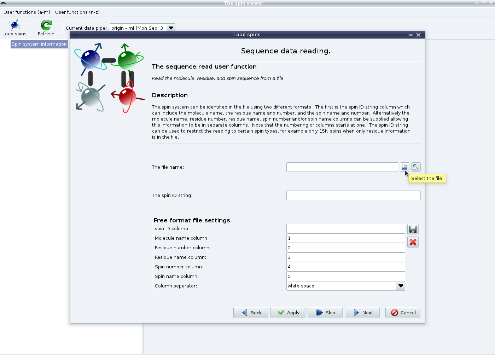

Next: GUI mode - manual Up: Setup in the GUI Previous: GUI mode - spins Contents Index
Starting from the empty spin viewer window on page ![[*]](crossref.png) ), click on the ``Load spins'' button. You will then see the spin loading wizard (see page ). Select the option for reading data from a sequence file. You should then see:
), click on the ``Load spins'' button. You will then see the spin loading wizard (see page ). Select the option for reading data from a sequence file. You should then see:
|

|
Select the file to load and change the ``Free format file settings'' as needed. An example of a suitable format is given on page . Click on ``Next'' to reach the wizard ending page (see ). Finally click on ``Finish'' to exit the wizard.
The relax user manual (PDF), created 2014-02-04.